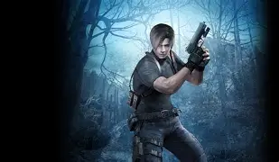
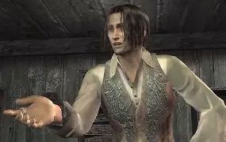
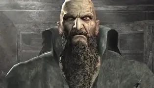
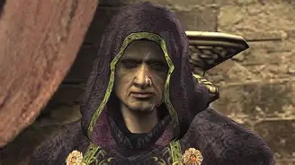
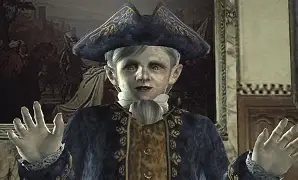
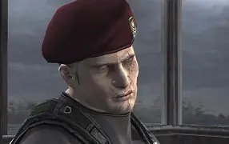

O policial que teve de enfrentar zumbis na infectada Raccoon City em seu primeiro dia de serviço agora é um agente do governo, contratado para resgatar a filha do presidente dos EUA, que foi sequestrada e levada a um pequeno e aparentemente pacífico vilarejo localizado em algum lugar na Europa. Porém, Leon se vê no meio de uma terrível conspiração envolvendo a garota e velhos conhecidos seus e, para escapar, deverá enfrentar mais uma vez criaturas modificadas por uma misteriosa infecção.
A filha do presidente dos EUA acabou sequestrada e levada até o vilarejo, como parte inicial de um plano arquitetado por Osmund Saddler. Ashley é extremamente mimada e exige cuidados especiais. À medida que Leon avança pelo local, a garota pode acabar sendo até mesmo um obstáculo para ele, que deve ao mesmo tempo deixá-la longe dos inimigos e tentar manter-se vivo para tirá-los de lá.
A espiã que aparentemente havia morrido em Raccoon City volta com um objetivo específico em relação às Plagas que são utilizadas no local. Munida de equipamentos de alta tecnologia e com um grande preparo físico, a espiã chega a auxiliar Leon em alguns momentos, sem deixar claro sua posição em relação ao agente.

O espanhol aparece inicialmente como um prisioneiro de Saddler, contando para Leon que também é apenas um ex-policial. Porém, Luis sabe mais sobre as Plagas do que aparenta, e possui um objetivo determinado em relação a elas.

Bitores é o chefe do vilarejo e exerce certa autoridade sobre os Ganados da região. É extremamente alto e dotado de grande força, o que faz com que os esforços de Leon para derrotá-lo sejam praticamente inúteis.

É o líder do culto Los Illuminados e a grande mente por trás do plano que visava inicialmente o sequestro de Ashley Graham. Lord Saddler, como é chamado por seus subordinados, possui total controle sobre as Plagas e sobre os outros humanos infectados, os Ganados.

O bizarro dono do castelo que abriga o culto Los Illuminados tem apenas 20 anos e é o último membro de sua nobre família. Está sempre ao lado de seus guarda-costas e é extremamente provocador. A existência das Plagas está ligada a ele e ao imenso castelo, fazendo-o cedê-las para Saddler utilizá-las como parte de seu plano.

Um velho conhecido de Leon, dado como morto anos antes, também está nas redondezas do vilarejo. Foi ele o responsável por levar Ashley ao seu cativeiro, porém sua lealdade aos Los Illuminados é questionada, já que ele aparentemente está envolvido com outras pessoas.